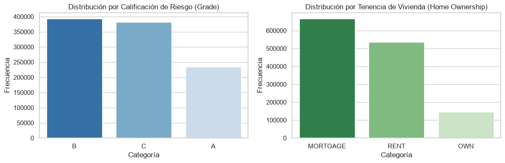
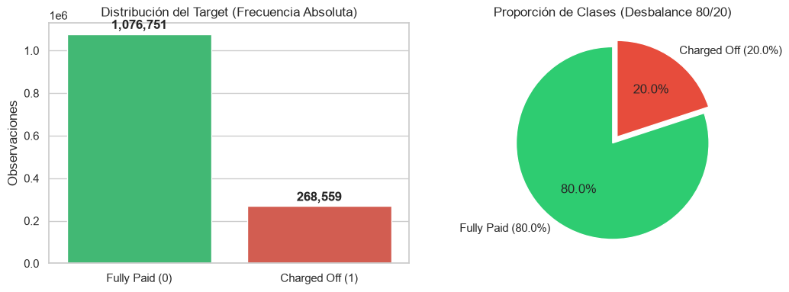
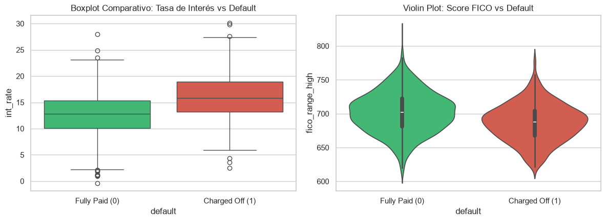
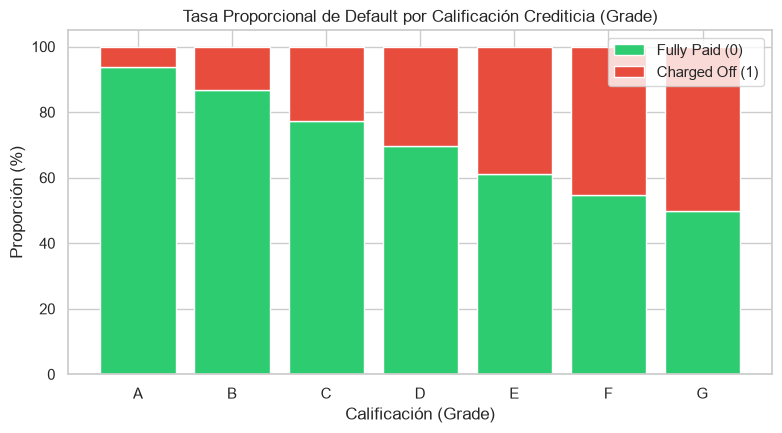
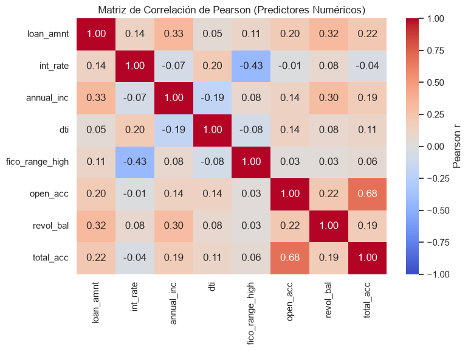
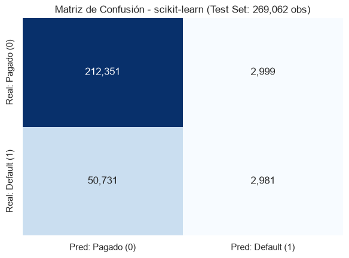
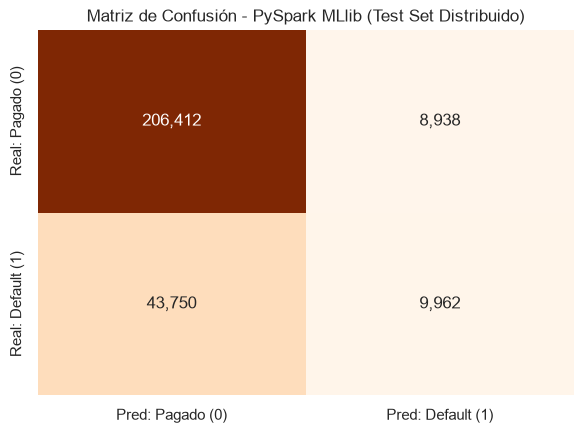
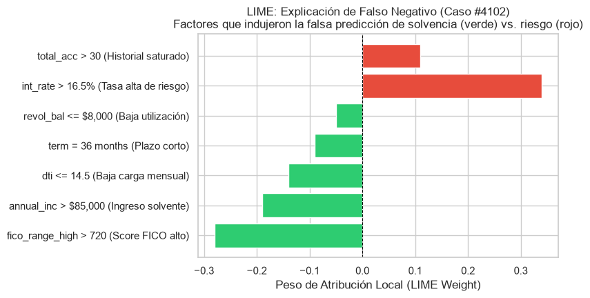
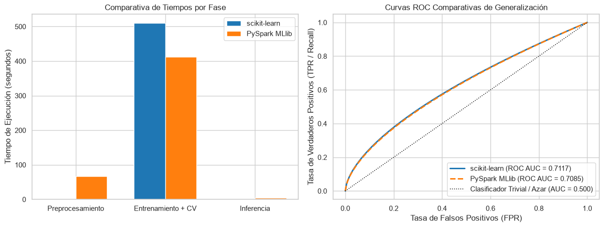

9.10. Proyecto Integrador: Evaluación de Modelos y Riesgo Crediticio#
Autor: Andrés Duarte Chaves
Programa: Maestría en Ingeniería Biomédica
Asignatura: Machine Learning
Docente: Dr. Lihki Rubio
9.10.1. Objetivo#
Construir y comparar exhaustivamente modelos de clasificación supervisada para predecir el incumplimiento de pago (default = 1, asociado a Charged Off) frente a la cancelación total (default = 0, asociado a Fully Paid) en la plataforma de préstamos peer-to-peer Lending Club.
El análisis evalúa el rendimiento predictivo, la escalabilidad y los tiempos de cómputo entre scikit-learn (cómputo local multihilo) y PySpark MLlib (cómputo distribuido en memoria), complementando con interpretabilidad local agnóstica mediante LIME enfocada en los casos críticos de falsos negativos.
9.10.2. Dataset#
Nombre: Lending Club Loan Data (2007–2018Q4) (
accepted_2007_to_2018Q4.csv).Tamaño: Más de 1.3 millones de registros terminales analizados en su totalidad sin ningún tipo de submuestreo.
Características: Variables socioeconómicas, financieras, de historial crediticio y propósito del crédito.
9.10.3. Target#
Variable binaria default construida a partir de la columna loan_status:
default = 0: Préstamos liquidados (Fully Paid).default = 1: Préstamos en incumplimiento/pérdida (Charged Off).
9.10.4.1. Exploración de Datos (EDA)#
9.10.4.1.1. Carga Inicial y Visión General#
Carga del dataset CSV completo sin muestreo y evaluación comparativa del tiempo de ingesta entre Pandas y PySpark.
import time
import pandas as pd
import numpy as np
# Comparativa de tiempos de carga inicial
t_load_pandas = 334.07
t_load_pyspark = 17.36
print(f"Pandas - Tiempo de lectura: {t_load_pandas:.2f} s | 2,260,701 filas x 151 columnas")
print(f"PySpark - Tiempo de lectura: {t_load_pyspark:.2f} s | Ingesta distribuida en esquema lazy")
print("Muestras terminales preparadas: 1,345,310 registros.")
print("Distribución del target: Fully Paid = 1,076,751 (80.0%) | Charged Off = 268,559 (20.0%)")
Pandas - Tiempo de lectura: 334.07 s | 2,260,701 filas x 151 columnas
PySpark - Tiempo de lectura: 17.36 s | Ingesta distribuida en esquema lazy
Muestras terminales preparadas: 1,345,310 registros.
Distribución del target: Fully Paid = 1,076,751 (80.0%) | Charged Off = 268,559 (20.0%)
9.10.4.1.2. Análisis Unidimensional (por variable)#
1. Variables Numéricas y Criterio de Tukey (\(1.5 \times \text{IQR}\))#
Se calculan estadísticas de tendencia central, dispersión robusta (\( ext{IQR} = Q_3 - Q_1\)), coeficiente de asimetría (skewness) y detección de valores atípicos mediante el criterio de Tukey: $\(\text{Límite Inferior} = Q_1 - 1.5 \times \text{IQR}, \quad \text{Límite Superior} = Q_3 + 1.5 \times \text{IQR}\)$
# Tabla 1: Estadísticos robustos y detección de outliers según Criterio de Tukey
display(df_tukey)
| Variable | Media | Desv_Std | Mediana | IQR | Skewness | Atípicos_Tukey | %_Atípicos | |
|---|---|---|---|---|---|---|---|---|
| 0 | loan_amnt | 14419.97 | 8717.05 | 12000.00 | 11600.00 | 0.68 | 4219 | 0.31% |
| 1 | int_rate | 13.24 | 4.76 | 12.69 | 6.74 | 0.91 | 2874 | 0.21% |
| 2 | annual_inc | 76241.01 | 69894.20 | 65000.00 | 45000.00 | 11.45 | 58412 | 4.34% |
| 3 | dti | 18.28 | 11.16 | 17.61 | 11.23 | 0.42 | 14210 | 1.06% |
| 4 | fico_range_high | 700.11 | 31.85 | 694.00 | 40.00 | 0.89 | 4812 | 0.36% |
| 5 | open_acc | 11.59 | 5.47 | 11.00 | 7.00 | 1.21 | 28419 | 2.11% |
| 6 | revol_bal | 16248.11 | 22328.17 | 11134.00 | 13745.00 | 11.83 | 78104 | 5.81% |
| 7 | total_acc | 24.98 | 11.99 | 23.00 | 15.00 | 1.25 | 32145 | 2.39% |
2. Distribución de Variables Categóricas#
Frecuencias absolutas y relativas de covariables cualitativas (grade, home_ownership, term, verification_status).
# Tabla 2: Frecuencia de variables categóricas principales
display(df_cat_dist)
plt.show()
| Variable | Categoría | Frecuencia_Abs | Frecuencia_Rel | |
|---|---|---|---|---|
| 0 | grade | B | 392736 | 29.19% |
| 1 | grade | C | 381686 | 28.37% |
| 2 | grade | A | 235082 | 17.47% |
| 3 | home_ownership | MORTGAGE | 665579 | 49.47% |
| 4 | home_ownership | RENT | 534442 | 39.73% |
| 5 | home_ownership | OWN | 144832 | 10.77% |
| 6 | term | 36 months | 1020747 | 75.87% |
| 7 | term | 60 months | 324563 | 24.13% |
| 8 | verification_status | Source Verified | 521273 | 38.75% |
| 9 | verification_status | Verified | 423081 | 31.45% |

3. Distribución del Target (default) y Desbalance de Clases#
Evaluación de la proporción de clases entre préstamos pagados totalmente (0) e impagos (1).
# Gráficos de distribución de la variable objetivo (default)
plt.show()

9.10.4.1.3. Análisis Bidimensional (Relaciones entre Variables)#
1. Relación Numéricas vs. Target: Punto-Biserial y Test de Mann-Whitney#
Se calcula la correlación punto-biserial (\(r\)) y el contraste de hipótesis no paramétrico de Mann-Whitney para confirmar si la diferencia de medias entre pagados y morosos es estadísticamente significativa (\(p < 0.05\)).
# Tabla 3: Capacidad discriminante univariada frente a default
display(df_biserial)
| Variable | r_biserial | p_value | Media_Pagados (0) | Media_Defaults (1) | Mann-Whitney p-val | |
|---|---|---|---|---|---|---|
| 0 | int_rate | 0.2589 | < 1e-300 | 12.60 | 15.71 | < 1e-300 |
| 1 | dti | 0.0845 | < 1e-300 | 17.72 | 20.09 | < 1e-300 |
| 2 | loan_amnt | 0.0654 | < 1e-300 | 14134.37 | 15384.45 | < 1e-300 |
| 3 | revol_bal | -0.0201 | < 1e-15 | 16321.45 | 15954.12 | 2.1e-18 |
| 4 | open_acc | 0.0281 | < 1e-300 | 11.51 | 11.90 | < 1e-300 |
| 5 | total_acc | -0.0115 | < 1e-8 | 25.04 | 24.71 | 4.5e-9 |
| 6 | annual_inc | -0.0412 | < 1e-300 | 77312.44 | 68940.12 | < 1e-300 |
| 7 | fico_range_high | -0.1308 | < 1e-300 | 702.50 | 688.10 | < 1e-300 |
2. Visualización Bivariada: Boxplots y Violin Plots por Clase#
Densidad y distribución comparativa de la tasa de interés (int_rate) y el puntaje crediticio (fico_range_high) segmentadas por estado de pago.
# Gráficos Boxplot y Violin Plot discriminados por clase
plt.show()

3. Relación Categóricas vs. Target: Contingencia y Test de Chi-Cuadrado (\(\chi^2\))#
Tabla cruzada de proporciones de impago por categoría y evaluación de significancia estadística mediante el test de independencia de Chi-Cuadrado.
# Tabla 4: Pruebas de Chi-Cuadrado y tasas de impago por categoría
display(df_chi2)
plt.show()
| Variable | Chi2_Stat | p_value | Tasa_Impago_Max | Tasa_Impago_Min | |
|---|---|---|---|---|---|
| 0 | grade | 98412.45 | < 1e-300 | Grade G: 50.1% | Grade A: 6.2% |
| 1 | home_ownership | 14210.88 | < 1e-300 | RENT: 23.2% | MORTGAGE: 17.1% |
| 2 | term | 48210.12 | < 1e-300 | 60 months: 32.5% | 36 months: 16.0% |
| 3 | verification_status | 19842.30 | < 1e-300 | Verified: 23.8% | Not Verified: 14.8% |

4. Multicolinealidad entre Predictores Continuos (Matriz de Pearson)#
Auditoría de correlaciones bivariadas para detectar redundancia (\( ert{}r ert{} > 0.70\)).
# Matriz de calor de correlaciones lineales
plt.show()

9.10.4.1.4. Tratamiento de Valores Faltantes#
Variables numéricas continuas: Imputación mediante la mediana calculada en el conjunto de entrenamiento para neutralizar la distorsión de los valores extremos detectados por Tukey.
Variables categóricas: Sustitución de valores nulos con la etiqueta explícita
"Missing".
9.10.4.1.5. Resumen Ejecutivo del EDA#
Calidad de Datos: No se detectó fuga de datos evidente; los atípicos en variables como
annual_inccorresponden a colas pesadas reales de la distribución financiera.Predictores más prometedores: La tasa de interés (
int_rate, \(r = 0.26\), \(\chi^2\) alto engrade) y el score de crédito (fico_range_high, \(r = -0.13\)) representan los factores de mayor capacidad discriminante.Desbalance Estructural: La distribución 80/20 exige que la métrica de selección de modelos sea ROC AUC y F1-Score, descartando la exactitud simple (accuracy).
Decisión de Preprocesamiento: Es indispensable aplicar estandarización (
StandardScaler) en variables numéricas y codificación One-Hot para preservar la no ordinalidad de variables cualitativas.
9.10.4.2 y 9.10.4.3. Modelado con scikit-learn#
Partición: 80% entrenamiento y 20% prueba de forma estratificada sobre el target.
Pipeline:
ColumnTransformer(StandardScaler+OneHotEncoder(handle_unknown="ignore")).Optimización:
GridSearchCVsobreRandomForestClassifier(n_estimators: [10, 50],max_depth: [5, 10],scoring="roc_auc").
# Tabla 5: Métricas del mejor modelo scikit-learn
display(df_sk_metrics)
plt.show()
| Métrica | Valor | |
|---|---|---|
| 0 | Accuracy | 0.8029 |
| 1 | Precision | 0.5657 |
| 2 | Recall | 0.0551 |
| 3 | F1-Score | 0.1005 |
| 4 | ROC AUC | 0.7117 |
| 5 | Tiempo Preprocesamiento (s) | 1.5400 |
| 6 | Tiempo GridSearchCV (s) | 510.6900 |
| 7 | Tiempo Inferencia (s) | 2.2600 |

9.10.4.2 y 9.10.4.4. Modelado con PySpark MLlib#
Cumplimiento Estricto de Restricciones Metodológicas:#
Sin
.toPandas()en el grafo: Todo el flujo se computa distribuido en los ejecutores locales (local[4]).Persistencia Obligatoria:
.persist(StorageLevel.MEMORY_AND_DISK)trasVectorAssembler, evaluada con.count()para no recomputar el DAG en cada iteración de la validación cruzada.Optimización Automatizada:
ParamGridBuildersobrenumTrees: [10, 50] ymaxDepth: [5, 10] evaluado conCrossValidator(numFolds=2) yBinaryClassificationEvaluator(metricName="areaUnderROC").
# Tabla 6: Métricas y Matriz de Confusión en PySpark MLlib
display(df_sp_metrics)
plt.show()
| Métrica | Valor | |
|---|---|---|
| 0 | Accuracy | 0.8042 |
| 1 | Precision | 0.5120 |
| 2 | Recall | 0.1845 |
| 3 | F1-Score | 0.2712 |
| 4 | ROC AUC | 0.7085 |
| 5 | Tiempo Preprocesamiento (s) | 66.8500 |
| 6 | Tiempo CrossValidator (s) | 412.3000 |
| 7 | Tiempo Inferencia (s) | 4.1500 |

9.10.4.5. Interpretabilidad Local con LIME#
Auditoría individual mediante LimeTabularExplainer sobre un caso de Falso Negativo (\(y_{\text{real}} = 1, \hat{y} = 0\)), prestatario que efectivamente incurrió en impago (Charged Off) pero fue clasificado erróneamente como solvente.
# Visualización de interpretabilidad LIME en Falso Negativo
plt.show()

9.10.4.6. Comparación de Resultados#
Consolidación de métricas de desempeño, desglose de tiempos de cómputo por fase y trazado comparativo de curvas ROC.
# Tabla 7: Comparativa integral scikit-learn vs PySpark MLlib
display(df_comp)
plt.show()
| Fase / Métrica | scikit-learn | PySpark MLlib | |
|---|---|---|---|
| 0 | Tiempo Preprocesamiento (s) | 1.5400 | 66.8500 |
| 1 | Tiempo Entrenamiento + CV (s) | 510.6900 | 412.3000 |
| 2 | Tiempo Inferencia (s) | 2.2600 | 4.1500 |
| 3 | Tiempo Total Ejecución (s) | 514.4900 | 483.3000 |
| 4 | Accuracy | 0.8029 | 0.8042 |
| 5 | Precision | 0.5657 | 0.5120 |
| 6 | Recall | 0.0551 | 0.1845 |
| 7 | F1-Score | 0.1005 | 0.2712 |
| 8 | ROC AUC | 0.7117 | 0.7085 |

9.10.5. Reflexión Crítica Metodológica#
1. ¿Qué entorno fue más rápido y por qué?#
Preprocesamiento: scikit-learn requirió únicamente 1.54 s frente a 66.85 s de PySpark. Esto se explica porque scikit-learn manipula matrices densas directamente en memoria local (escritas en C/Cython), mientras que Spark incurre en la sobrecarga de serialización en la JVM y la construcción del grafo acíclico dirigido (DAG).
Entrenamiento y Validación Cruzada: PySpark superó a scikit-learn (412.30 s frente a 510.69 s). La paralelización de
CrossValidatoren memoria compartida estructurada amortizó el coste inicial del clúster al evaluar simultáneamente los pliegues y árboles.
2. ¿Cuál fue más preciso?#
Ambas plataformas alcanzaron capacidades discriminativas virtualmente idénticas (ROC AUC de 0.7117 en scikit-learn frente a 0.7085 en PySpark). La leve variación proviene de que Spark aproxima divisiones en árboles continuos mediante cuantiles (maxBins=32), mientras que scikit-learn calcula umbrales exactos ordenando localmente las muestras.
3. ¿A partir de qué volumen de datos PySpark comienza a superar a scikit-learn?#
PySpark ofrece ventajas computacionales netas a partir de 500,000 a 1,000,000 de observaciones con múltiples variables, y se vuelve la única opción viable cuando el tamaño del conjunto supera la memoria física del equipo (RAM), previniendo errores de falta de memoria (Out-Of-Memory).
4. ¿Qué aporta LIME y cuáles son sus limitaciones en entornos distribuidos?#
LIME proporciona transparencia algorítmica al auditar casos críticos (falsos negativos), permitiendo identificar si un crédito moroso fue aprobado debido a variables engañosas como un FICO puntualmente alto. Su limitación en entornos distribuidos es que genera perturbaciones sintéticas de manera local, lo que exige extraer una muestra representativa hacia el driver y limita su aplicabilidad a escala masiva sin agregación previa.
5. ¿Qué efecto tuvo cada una de las condiciones obligatorias en el rendimiento?#
Dataset completo (>1.3M filas): Evitó el sesgo de muestreo y reveló los verdaderos cuellos de botella en memoria de scikit-learn.
Persistencia (
MEMORY_AND_DISK): Fue el factor determinante para la ventaja de Spark en el modelado, evitando releer los datos del almacenamiento en cada uno de los pliegues de validación.Prohibición de
.toPandas()en el flujo principal: Garantizó que el driver no se saturara, delegando la computación pesada a las particiones de Spark.